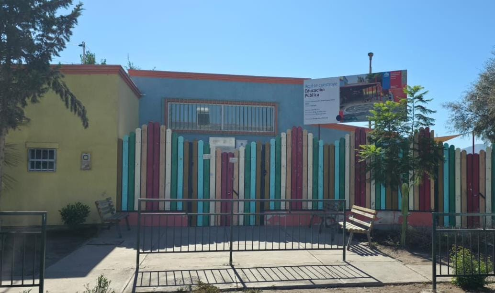

¿Quiénes somos?
Nuestro Jardín Infantil se caracteriza por desarrollar la labor educativa conjunta desde la afectividad y promover el respeto y diálogo constante.
Educación con afectividad y valores

Nuestro Jardín Infantil se caracteriza por desarrollar la labor educativa conjunta desde la afectividad y promover el respeto y diálogo constante.
Promover el desarrollo integral de cada niño y niña mediante el juego, la interacción y el aprendizaje significativo.
Fortalecer conocimientos, destrezas y habilidades en las niñas y niños a través del desarrollo de la creatividad.